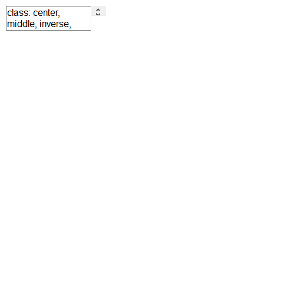

| name: case-study-document class: inverse, middle |
| # Outline |
.pull-left[
현재 각광받고 있는 .warmyellow[데이터 과학]에 대한 전반적인 이해와 더불어 핵심적인 개념을 짧은 시간에 다루게 됩니다.
데이터 과학의 실제 .black[다양한 사례]를 정형데이터와 비정형 데이터(문서)를 살펴봅니다.
.green[디지털 경제]의 주요한 동인인 .green[자동화]와 경제적인 면에 초점을 두어 .green[기계학습]에 대해 설펴봅니다.
]
.pull-right[ .left[ 1. 데이터 과학
2. 사례 분석 : 데이터
7. 마무리 ] ]
| name: crisis-excel # 위기의 스프레드쉬트(엑셀) |
.center[  ] ] |
| .footnote[ 스터디 뽀개기 7월 (2016-07-30), 분석행(Train to data-analysis)] |
name: excel-crisis-accident # 스프레드쉬트 참사
| 회사 | 손실 | 날짜 | 영향 | 참사 개요 |
|---|---|---|---|---|
| Mouchel | £ 4.3백만 | ’10.11월 | CEO 사임, 주가폭락 | 연금펀드평가 £ 4.3백만 엑셀 오류 |
| C&C Group | £ 9 백만 | ’09.7월 | 주가 15% 하락 등 | 매출 3% 상승이 아니고 5% 하락, 엑셀 오류 |
| King 펀드 | £ 130 백만 | ’11.05월 | 브래드 이미지 하락 | 웨일즈 지방 NHS 지출 엑셀 오류 |
| AXA Rosenberg | £ 150 백만 | ’11.02월 | 은폐, 벌금, 브래드 이미지 하락 | 엑셀 오류를 감춰서 $242 백만 벌금 |
| JP Morgan Chase | £ 250 백만 | ’13.01월 | 명성, 고객 신뢰도 저하 | 바젤 II VaR 위험 평가 엑셀 오류 |
| Magellan 펀드 | £ 1.6 십억 | ’95.01월 | 투자자에게 약속한 배당금 지급 못함 | 음수 부호 누락으로 자본이득 과대계상 |
| 미연방준비위원회 | £ 2.5 십억 | ’10.10월 | 명확하지 않음 | 리볼빙 카드 신용액 산출 과정에 엑셀 오류 |
.footnote[ THE DIRTY DOZEN 12 MODELLING HORROR STORIES & SPREADSHEET DISASTERS]
| name: why-leave-excel # 스프레드쉬트를 버려야 하는 6가지 이유 |
| ### 스프레드쉬트를 사용하는 이유 |
| > > * 항상 엑셀을 사용했다: 항상 데이터를 엑셀로 저장하고 분석해서 사용했다. 하지만, 버튼 하나로 데이터를 내보내기 쉽다. > * 데이터베이스를 사용할 만큼 데이터가 충분하지 않다: 데이터가 작아서 데이터베이스를 사용할 이유를 찾지 못하지만, 사업이 커지고, 업무량이 늘어나면서 엑셀 작업량이 높아지고, 복잡성도 커지고, 엑셀 자체에서 처리되는 시간도 늘어난다. |
| ### 스프레드쉬트를 떠나야하는 이유 |
| 1. 한번에 한사람만 작업이 가능하다. 1. 데이터 감사는 데이터베이스에서만 가능 1. 데이터베이스는 정형화된 작업흐름을 지원한다. 1. 데이터베이스는 엑셀보다 모형을 보다 잘 지원한다. 1. 데이터베이스로 보고서 생성이 수월하다. 1. 데이터베이스는 보안이 강력하고 규제하기 좋다. |
| .footnote[ 데이터 과학, “위기의 스프레드쉬트”] |
name: excel-complexity # 스프레드쉬트 알고리즘 복잡성
.center[  ]
]
.footnote[ 탈옥(jailbreakr) – 엑셀에서 탈출… 자유]
| name: reason-excel-complex # 스프레드쉬트 복잡성과 효율성 |
| .pull-left[ |
| - 스프레드쉬트는 데이터, 서식, 수식으로 구성된다. - 숫자 데이터를 엑셀로 가져오게 되면 엑셀 내장 함수를 통해 수식 계산을 수행한다. - 엑셀 사용자 본인 혹은 외부 사람을 위해 서식을 입히는 과정을 거쳐 비로소 완성된 스프레드쉬트가 된다. |
| ] |
.pull-right[ .center[  ]] ]] |
| .footnote[ 탈옥(jailbreakr) – 엑셀에서 탈출… 자유] |
name: crisis-powerpoint # 파워포인트의 종말 ← 아마존
.center[  ]
]
.footnote[ 김미리 기자 (2019.04.06.), “보고서 치장은 그만, 글로 써라.. ‘제로 PPT’ 선언하는 기업들”, 조선일보]
| name: three-paradigms # 세가지 다른 글쓰기 패러다임 |
.center[  ] ] |
| .footnote[ 심각한 현재 상황] |
name: automation ## 도구가 자동화하는 저작 업무
.pull-left[ ### 1. \(LaTex\) 사례 
정보교육을 위한 파이썬: 데이터 과학자로의 여정, 아마존 절찬 판매중 ]
.pull-right[ ### 2. 북다운(Bookdown)
.center[  ] 컴퓨터 과학 언플러그드, 이광춘 번역 ]
] 컴퓨터 과학 언플러그드, 이광춘 번역 ]
| name: automation-continued ## 도구가 자동화하는 저작 업무 |
.pull-left[ ### 3. SW 도움말  |
| - Welcome to Reeborg world! - 리보그 한국어 버젼 - 프로그래밍과 문제해결: 파이썬, 리보그, 러플 |
| ] |
| .pull-right[ ### 4. 블로그 |
.center[  ] ] |
데이터 과학을 위한 저작도구 블로그 - blogdown ] xwMOOC 블로그 - netlify |
name: automation-slideshow ## 도구가 자동화하는 저작 업무
5. 슬라이드쇼(slideshow)
.center[  ]
]
.footnote[ 소프트웨어에 물들다(왕곡초등학교, 2018-05-26) - 글쓰기를 잘하기 위해서 알아야 되는 코딩]
| name: slideshow-final-boss # 파워포인트 → AI |
| .center[ |
r knitr::include_url('https://statkclee.github.io/ds-authoring/seoul_r_xaringan.html#1') |
|  |
| ] |
| .footnote[ 이광춘 (2020-12-12), “파워포인트를 넘어서 - xaringan”, Seoul R Meetup 2020] |
name: slideshow-final-boss # 아래한글, 워드 → computational documents
.pull-left[
knitr::include_url('https://statkclee.github.io/ds-authoring/KCD2020_Tidyverse.html#1')
]
.pull-right[
]
.footnote[ 이광춘 (2020-11-07), “코딩으로 글쓰는 슬기로운 탐구생활 발표자료”, KCD(Korea Community Day) 2020]